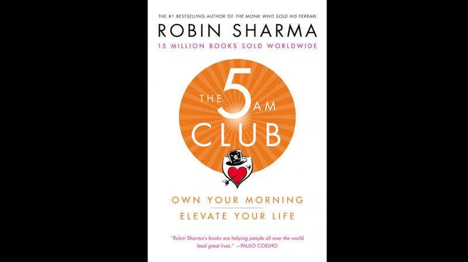

Library › Productivity
The 5 AM Club — Summary & Key Lessons

Own your morning, elevate your life — the 20/20/20 formula that turns 5 AM into a competitive advantage.
📖 OPEN THE FULL INTERACTIVE BREAKDOWN →🌐 Read it in Hindi, Hinglish, Gujarati, Tamil & 22 more languages — free, with audio.
💡 The Big Idea
Told as a fable — a burned-out entrepreneur and a frustrated artist mentored by an eccentric billionaire — Sharma's system weaponizes the day's first hour: at 5 AM, willpower is fresh, distractions are zero, and the brain's quieter state is primed for deep programming. The core protocol is the 20/20/20 formula: Move (intense exercise to flush cortisol and spike focus chemistry), Reflect (journaling, meditation, planning in silence), Grow (study — because the best earners are the best learners). Around it: the Four Interior Empires (Mindset, Heartset, Healthset, Soulset — success needs all four, not just positive thinking), the Twin Cycles of Elite Performance (world-class results demand deep REST, not just deep work), and the 66-day habit-installation arc through destruction, installation, and integration. Own your morning; the day, then the life, follows.
🧠 The 5 Key Lessons
Lesson 1: Why 5 AM: The Science of the Victory Hour
Chapters 4–7: The Spellbinder's Case for Morning
The hour's magic is convergence: willpower is a depleting resource at its daily maximum after sleep; the world is silent (zero inbound demands, the rarest modern condition); and the pre-dawn brain state favors calm focus over reactive noise — the transient quiet lets you think, plan, and create from intention instead of reaction. Sharma frames it as solitude economics: the 5 AM riser buys a daily hour of the scarcest asset (undistracted self-directed time) at the cheapest price (earlier sleep). The deeper argument is identity: how you begin anything disproportionately shapes it — days included. You don't rise at 5 for productivity theater; you rise to install yourself as the person who runs the day before the day runs them.
📖 Example: The fable's billionaire mentor puts the two students through the ritual on a beach in Mauritius, but Sharma's supporting cast is historical: Mandela's lifelong pre-dawn exercise (even in prison), the CEOs, athletes, and artists whose biographies repeat the… Read the full example →
⚡ Do this: Start with 5:30 or even 6, but win it: tonight, set the alarm 30 minutes earlier, put the phone outside the bedroom, and pre-decide the first hour on paper. The rule is simple — no inputs (phone, news, mail) until the hour is yours.
Lesson 2: The 20/20/20 Formula
Chapter 12: The 20/20/20 Formula
The Victory Hour has architecture — three 20-minute pockets, in strict order. MOVE (5:00–5:20): sweat hard; intense exercise burns off residual cortisol (highest at dawn), releases BDNF (fertilizer for brain cells), and spikes dopamine and serotonin — you're literally manufacturing the neurochemistry of focus before work begins. REFLECT (5:20–5:40): in the calm after exertion — journal (dump worries, name gratitudes, declare intentions), meditate, pray, or plan; this pocket turns ambition inward and is where clarity and emotional governance are built. GROW (5:40–6:00): study — books, courses, podcasts, case studies; the 'best leaders learn daily' pocket that compounds into unassailable expertise over years. Order matters: sweat unlocks the brain, silence steadies it, study loads it. Skip pockets and the hour degrades into either exercise-only or reading-in-fog.
📖 Example: Sharma's characters resist exactly as readers do — the artist hates exercise, the entrepreneur 'has no time to journal' — and the mentor holds the line on sequence: the artist who reads first (skipping sweat) reports foggy retention; once flipped, the same… Read the full example →
⚡ Do this: Run the full formula for 14 days: 20 minutes of genuinely sweaty movement, 20 of journal/meditation (use three prompts: what I'm grateful for, what I intend today, what I'm letting go), 20 of study in your field. Judge nothing until day 14.
Lesson 3: The Four Interior Empires
Chapter 8: The 4 Interior Empires
The self-help industry sells Mindset as the whole game; Sharma calls it one empire of four. MINDSET (beliefs, self-talk, psychology) matters — but sits atop HEARTSET (emotional life: unprocessed anger, grief, and resentment sabotage the finest psychology; healing and gratitude work are performance work), HEALTHSET (physical vitality: energy is the currency genius spends — longevity practices, exercise, nutrition are career strategy, not vanity), and SOULSET (spirituality broadly: connection to purpose, service, stillness — the reservoir that makes success feel like something rather than more numbers). Elite performance requires calibrating all four; the collapsed executive with a bulletproof mindset and a bankrupt heartset is the book's recurring cautionary figure. Genius, in Sharma's ledger, is a full-stack phenomenon.
📖 Example: The fable's entrepreneur arrives mindset-rich — affirmations, goals, strategy — and near breakdown anyway: the neglected empires (grief unprocessed, body running on caffeine and four hours of sleep, purpose long since buried under metrics) had been billing… Read the full example →
⚡ Do this: Score yourself 1–10 in each empire today. Your lowest score is this quarter's project: pick one concrete practice for it (heartset: nightly forgiveness journaling; healthset: fixed sleep window; soulset: weekly service or stillness) and attach it to your existing morning hour.
Lesson 4: Deep Work Needs Deep Rest: The Twin Cycles
Chapters 10, 14: The Twin Cycles of Elite Performance
Sharma's correction to hustle culture comes from athletics: growth happens in RECOVERY, not in performance. Elite performers oscillate between the High Excellence Cycle (intense, focused, undistracted work sprints — 90 minutes of monomaniacal focus beats a scattered day) and the Deep Refueling Cycle (real rest: sleep as non-negotiable infrastructure, nature, massage, play, digital fasts). Refusing recovery doesn't buy more output — it converts tomorrow's capacity into today's mediocre overtime, and cortisol-soaked always-on work produces busy exhaustion, not assets. The 5 AM Club's hidden second rule is therefore an EARLY NIGHT: the victory hour is financed the evening before. Rest, in this model, isn't the absence of work; it's when the work gets consolidated into growth.
📖 Example: The mentor's teaching prop is the athlete's training log: muscle is torn in the gym but BUILT in sleep — train relentlessly without recovery and performance falls while effort rises, the overtraining curve every burned-out executive is unknowingly riding.… Read the full example →
⚡ Do this: Engineer the night that funds the morning: set a digital sunset 90 minutes before bed and a fixed sleep window (aim 7.5+ hours). Then structure tomorrow as twin cycles: one 90-minute distraction-free work sprint, followed by a genuine 15-minute refuel — repeat, don't marathon.
Lesson 5: 66 Days: Destruction, Installation, Integration
Chapters 11, 13: How to Make a Habit Stick
Sharma's habit-installation arc rejects the 21-day myth: automaticity takes ~66 days, crossing three equal phases. DESTRUCTION (days 1–22): the old pattern fights back — this is the hardest stretch, where the wake-up feels like self-violence and quitting feels rational ('all change is hard at first'). INSTALLATION (days 23–44): messy middle — inconsistent, two-forward-one-back, where most people misread turbulence as failure ('messy in the middle'). INTEGRATION (days 45–66): the ritual begins running you — identity shifts from 'person forcing a habit' to 'person who does this' ('gorgeous at the end'). Support structure throughout: implementation is easier with accountability (the fable's characters do it together), pre-commitment (clothes laid out, alarm across the room), and self-compassion on stumbles — one missed dawn is data, not verdict. Past day 66, the habit protects itself.
📖 Example: The fable dramatizes each phase through its students: week two, the artist nearly quits (destruction's peak — 'my body is at war with me'); week five, the entrepreneur strings four perfect days, misses two, and spirals until the mentor reframes it… Read the full example →
⚡ Do this: Commit to the full 66 days on a visible tracker labeled with the three phases — so you EXPECT the day-15 misery and the day-35 wobble instead of quitting inside them. Recruit one partner for daily two-word check-ins ('done' / 'missed'), and pre-commit tonight: alarm across the room, clothes laid out.
✅ 5-Step Action Plan
- Move the alarm 30 minutes earlier tonight; no inputs until the hour is won.
- Run 20/20/20 for 14 days before judging: sweat, silence, study.
- Score your four empires; assign one practice to the weakest.
- Install the digital sunset and twin-cycle work rhythm.
- Track 66 days through destruction, installation, integration — with a partner.
💬 Best Quotes from The 5 AM Club
- “Take excellent care of the front end of your day, and the rest of your day will pretty much take care of itself.”
- “All change is hard at first, messy in the middle and gorgeous at the end.”
- “The moment when you most feel like giving up is the instant when you must find it in you to press ahead.”
Interactive version: mark lessons as read, listen in your language, share quote cards.